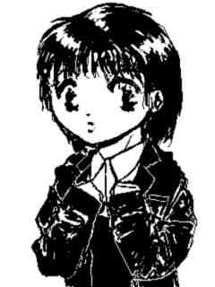
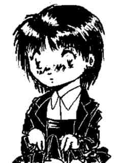
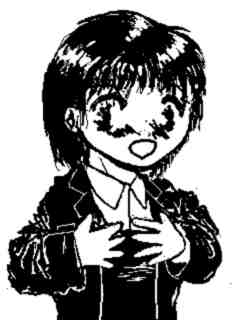
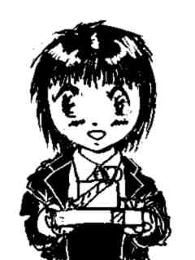

バレンタインは何か起こりやすい
文 ：ことぶきひかる
ＣＧ ：Hikaru-Kotobuki
SpecialThanks： ＮＤＣ−ＳＳ
本来，バレンタインデーとは、某宗教の聖人との絡みであって、チョコレート
はもちろん、お菓子などを贈ることとは，一切関係はない。
だが、もはや、日本国内において、２月１４日にチョコをばらまくという風習
は・・・そう，もはや風習となっており，発案者は、そのうち、お菓子メーカー
の社屋内に銅像を建てて貰えるかも知れないほどだ。
しかし、これは、平賀源内が，土用の丑の日を発案して以来，延々と続く，日
本人の、
「イベント行事などのお祭り騒ぎには逆らうな。」
という、同じ阿呆なら踊らにゃ損損体質の結果でもある。
だが，どんなに救いようのないバカヤローでも，１つくらいは，長所があるよ
うに、日本のバレンタインにも、いいところはある。
それは、１年のうちで，女性から男性へ，ものすごーく告白しやすい日である
ということだ。
まわりが、義理にせよ本命にせよチョコレートを配っている状態なら、普段、
ラブレターさえ出せない，かなり内気な女性でも、想い人に，チョコを贈るくら
いは出来るだろう。
義理チョコに隠して、本命を絞り込むもよし。一点買いで，本命もしくは大穴
を狙うもよし。
この日の告白なら、ふられたとしても、
「あんなの義理よ。義理チョコ。」
ということにもしてしまえる。
実際，バレンタインのお陰で、つきあいだしたり、そのまま結婚したりという
カップルもいるのだから、その効用を、一概に否定することはできないだろう。
経済波及効果と，お菓子メーカーの収支決算は別にしても。
だが、思い詰めた愛は、時として本人の自覚のないところで、とんでもない奇
跡を引き起こす。
そうでなくても、愛は、奇跡を起こしやすくする、排卵誘発剤みたいなところ
があるのだ。

勝沼詩織は，おとなしい内気な女の子だった。
その電話があったのは、夜の９時になろうかという頃だった。
受話器を取ったのは、遼一の母親だった。
「はい、沢木です・・・あら、詩織さん・・・ちょと、まってね。今，替わり
ますから・・・遼一、遼一，詩織さんからお電話よ。」
「え，詩織から・・・」
遼一は、２階から駆け下りると，母親から受話器を受け取った。
「あ、りょうちゃん・・・実は、相談に乗って欲しいことがあるの・・・」
電話機のそばで、無関心を装って、ちゃっかりと話の内容を聞こうとしてる母
親の姿が見えたため、遼一は、子機を保留に切り替えると、自分の部屋に駆け戻
った。
「お待たせ、で、相談ってなんだ？」
話の内容は予想はついたが、下手に先手を打つと、口べたな詩織は、そのまま
、話を繋げなくなってしまうため、遼一は、彼女が、自分から内容を話すよう促
した。
「実は・・・武之クンのことなの・・・」
「うん、分かった。もう少し詳しく話してくれよ。」
「うん・・・今度のバレンタイン、武之クンに・・・チョコレート、贈ろうと
想うの。」
（おし、いいぞいいぞ。）
心の中で，そう呟きながら、遼一は、詩織を促す。
「けど、武之クン，チョコが好きかどうかも分からないし・・・といって、他
になにをプレゼントしたらしいか，相談に乗って欲しくて・・・」
チョコ以外まで贈ろうとは、如何にも詩織らしい，慎重過ぎる考えだが、この
場合、あながち，無意味とは言えない。
「あいつ、甘いもの，苦手だからなあ。」
そういった直後、遼一は，自分の失言に後悔した。
折角，詩織が自分から、積極的な行動に出ようとしてところを、出鼻を挫くこ
とはないのに。
「そ、そうだ。あいつ、イラストレーター志望のところがあるだろ。
だから、既製の商品より、手作りのものが好きみたいなんだ。だから、小さく
てもいいから、手作りチョコを贈った方が印象がいいはずだよ。」
「手作り・・・」
詩織の料理の腕は，そんなに悪くないはずだ。
まだ、時間はあるから、当日までには充分間に合う。
「うん、頑張ってみる。」
普段の詩織からは聞く事の出来ない力強い返事だった。
「そうだ。チョコだけでなくて、一緒に何かプレゼントを付けて贈ればいいん
だ。
そういえば、武之の奴、欲しがっていたイラスト集があったんだ。けど・・・
ちょっと、高いからなあ・・・」
「・・・お年玉が，まだ残ってるから・・・」
「そうか、じゃあ、手作りチョコとイラスト集のセットで、決まりだな。
そうだ。渡し方とかは、僕に任せておけよ。」
話しながら、遼一は，頭の中で，詩織と武之を，どうくっつけたものか、細か
いシミュレートを始めていた。
２月１４日の放課後，遼一と詩織は、視聴覚準備室にいた。
もちろん、武之に、チョコとイラスト集を渡すためである。
「この時間なら、先生は、だれも来ないはずだし，２人っきりになるには、絶
好の場所のはず。」
「でも、りょうちゃん。ここの部屋の鍵、どうやったの？」
「へっへっへ、まあ、色々あってね。」
全くの偶然なのだが，遼一の部屋の鍵が、この視聴覚準備室の鍵と一致したの
だ。
それをいいことに，遼一と武之は、家では、見れないようなビデオを、こっそ
りと見ていた。
実は、今日も、それを口実に，武之を呼びだしてあるのだ。
机の上には、チョコの入った立方体の包みと，平べったい包みが置いてある。
もちろん、平べったい方の中身は、例のイラスト集だ。
「それと、今回のチョコ・・・と，本なんだけど，直接渡さなきゃダメだぞ。
」
「う、うん・・・分かってる。」
最初は，下駄箱か机の中に入れようと想っていた詩織を，どうにか説き伏せ、
直接，手渡しするようにさせた。
武之の好みからいって、詩織を特に嫌う要素は見あたらず、直接，手渡しさせ
れば、そのまま、彼女を気にいる可能性は大だった。
「りょうちゃん。これ、義理チョコなんだけど、りょうちゃんにも・・・」
詩織は、鞄から、武之向けのものと，ほとんど、変わらないサイズの包みを差
し出した。
「お、さんきゅー。ホワイトデーには、ちゃんとお返しするから。何がいい？
」
「いいよ、りょうちゃんには、今回、いろいろお世話になったから。」
「そういうわけにもいかないよ。」
「それじゃあ、何がいいか、考えておくね。」
「・・・遅いな・・・」
遼一は、ぽつりと呟いた。
遼一の予定していた時間になっても，武之は，姿を見せない。
次第に、詩織の様子が落ち着かなくなっていく。
遼一の怖れていたことが現実になろうとしていた。
内気な性格が災いして、詩織は，何事も、悪い方へ考えてしまう悪い癖があっ
た。
今回のように、下手に考える時間が出来てしまうと、その癖が、ぽっこりと浮
かび上がってくる。
「・・・りょうちゃん・・・あたし、帰る・・・」
怖れていたことが，現実になってしまった。
武之が来ない＝自分は嫌われている。
と、途中経過を無視したワープ航法式理論で、詩織は、結論づけてしまったの
だ。
「ちょちょ、ちょっと待って。もう少し、待ってみようよ。多分、掃除か何か
で遅れてるんだろうし。」
「もう、いいの・・・」
詩織を，どうにか留まらせようと，遼一は，彼女の手首を掴んだ。
と、遼一の脚が、パイプ椅子の１つに引っかかった。
体勢が，崩れる。
普段なら、手をついて、なんとか身体を支えるところだが、この時，遼一の手
は、詩織を引き留めようと、彼女の手首を掴んだままだった。
しかも、不意の事態に慌てたため、手を離すのが遅れた。
詩織の身体が，遼一に引っ張られる。
絡まるようにして、２人は、床に転がった。
詩織をかばおうと、身体を捻ろうとしたその時，遼一の視界を，何かが覆う。
ゴツンという，低く鈍い音と共に、火花が飛び散り，激痛と共に、遼一は意識
を失った。
痛みが、遼一の意識を引き戻した。
額が、ズキンズキン痛む。
何が起こったのか、想いだし，整理するのに、１０秒ほどかかった。
帰ろうとした詩織を引き留めようとしたら、脚に何かが引っかかって、転倒し
て、詩織を巻き込んで、彼女をかばおうとして、何かが頭にぶつかって・・・あ
れは、もしかしたら、詩織の頭だったのかもしれない・・・そして、気を失った
のだ。
剥き出しになった脚に，床の冷たさが伝わってくる。
剥き出しになった脚・・・
遼一は，おかしな事に気づいた。
スラックスをはいているはずなのに、なんで、剥き出しになっているんだ？
痛みを堪えながら、起きあがり、自分の下半身に目を向けた。
一目見て、遼一は驚いた。

自分が、スカートをはいていたからだ。
意を決して、両手を胸に押しあてた。
「転んだときに、頭をぶつけたのが，原因なのかなあ・・・」
「でも、どうして、こんなことが・・・こんな映画みたいなこと・・・」
「僕だって分からないよ。けど、僕と詩織の身体というか、心というかが、と
にかく入れ替わっちゃったのは，間違いなさそうだ。」
「でも・・・これじゃ、武之クンにチョコレート渡せないよ・・・」
やおい系大好きなヒトならともかく、中身は詩織でも、遼一の姿でチョコを渡
すとなれば，何を誤解されるか分からない。
遼一は、詩織の身体で舌打ちをした。
折角の機会だというのに、このままでは、後１年、詩織は告白できなくなって
しまう。
よりによって、身体が入れ替わるなんて、とんでもない事態が起こるなんて・
・・
身体が入れ替わる・・・
詩織と身体が入れ替わる・・・
詩織と・・・！
「そうだよ。僕が、渡せばいいんだよ。」
「え、でも、そんなことしたら、りょうちゃんが、武之クンに渡すことに。」
「だって、今の僕の格好は、詩織なんだ。だから、当然、僕が渡すと言うこと
は，武之にとっては，詩織に渡されるということになるだろ。」
「それはそうなんだけど・・・でも、やっぱり、あたしが渡すってことになら
ないじゃない。」
「でも、さっき、渡すの諦めて帰ろうとしただろ。それなら、中身は僕が、詩
織の格好で、渡したとしても、たいして、問題はないはずだけど。」
「う、うん・・・そうなんだけど。」
「男っていうのは、下駄箱に入っているより、直接手渡しで貰った方が嬉しい
し，その方が印象も良くなるもんなんだから。このまま、僕が、武之とつき合お
うってわけじゃない。
きっかけを作るを手伝うだけさ。」
「それは、そうなんだけど・・・」
「いくら何でも、そろそろ、武之が来るころだろう。さ、詩織は，とりあえず
、出てって出てって。」
「え、あたし、いたらダメなの？」
「こういうものは、２人っきりで渡した方が，効果的だって事くらい知ってい
るだろ。
３０分位，その辺、うろついてきてくれよ。」
不安がる詩織を，遼一は、無理矢理、追い出した。
無理矢理、詩織を追い出した遼一は、これからのこと・・・武之に，どう対応
するかを考えた。
詩織と身体が入れ替わるという，とんでもない事態が発生したが、考えように
よっては，詩織の振りをして，武之との関係を、進めてやることができるはずだ
。
詩織の性格では、チョコを渡すのが精一杯だろうが，それでは、２人の中が進
展するとは想えない。
ここは、自分が、詩織に変わって（というか、詩織本人になって），武之に、
ドンとアタックしてやろう。
入れ替わったまま、元に戻れないと言う可能性もあったが、遼一は無視するこ
とにした。
そのことについては、後で考えればいい。
武之に対して、どんな告白をすれば，その気になるのかを、考えてみる。
親友だけに、だいたい、どのようなシチュエーションに弱いかは、把握してい
た。
単語の１つ１つ、言葉遣い，目線や、手や指の動きまで、どうやったら、武之
が，その気になるかを考える。
更に、武之の反応を数通り想定して，その対応策も考えた。
準備室の扉が開いた。
「おーい、遼一，遅くなってゴメ・・・って，あれ、なんで，勝沼さんが、こ
こに？」
そういいながら、武之は，部屋の中を見渡した。
「遼一、ここに，いなかった？」
武之の右手には、紙袋が握られている。
今日、みるつもりのＡＶのテープなのだろう。
「あの・・・遼一君は，ここにいないの。」
「遼一がいないって、どういうこと？」
「ごめんなさい・・・あたしが、りょうちゃんに頼んで、武之君を呼んでもら
ったの。」
行き当たりばったり気味とはいえ，どうにか、詩織っぽい話し方が出来た。
遼一は、自分のアドリブに満足した。
「呼んでもらった？え、勝沼さんが？」

「これ・・・渡したかったの。」
しばらくして、遼一の姿の詩織が、準備室に戻ってきた。
「ね、どうだった？」
「ＯＫＯＫ，うまく渡せたよ。武之の奴も、イラスト集，喜んでたし。
そうだ、デートの約束したから，今度、電話が来るはずだから，そのつもりで
。」
「え、で、でーとぉ？！」
「あれ、なにか、問題でもあった？」
「だ、だって、いきなり、デートだなんて・・・」
「詩織は，武之のこと好きなんだろ。それなら、いずれ、デートすることにな
るんだから，それが、ちょっと早くなっただけのことさ。」
「でも、このままじゃ、りょうちゃんが、武之クンとデートすることになっち
ゃうんだよ。」
「あ、それは、気づかなかったなあ。ま、その時は、また、僕がうまくやるよ
。」
「えー、それじゃ、あたしは、どうなっちゃうの？」
「そうだよなあ・・・元に戻れないのは，困りものだし・・・」
不意に、こめかみに痛みを覚え、詩織は，反射的に額を押さえた。
「え、誌織、どうした？」
数秒ほど遅れて、遼一も頭痛に見舞われた。
痛みに目を開けていることが出来ない。
一瞬、意識を失いかける。
どうにか、痛みが去りかけ、残った痛みを振り払おうと、頭をあげた。
目の前には、本来の自分の顔は見えなかった。
遼一の視界には、誌織の顔があった。
「え、戻った？」
「戻ったのか・・・誌織だよな・・・」
「うん・・・りょうちゃんだよね？」
２人は、同時に頷き，どうにか元に戻れたことに、深い安堵のため息を付いた
。
「ああ・・・なーんか、ちょうどいいところで、元に戻れたみたいだな・・・
」
「けど、良かった。元に戻れて・・・」
「ん・・・ああ、そうだな。」
デートの時まで、元に戻らなければ，ダメ押しをしてやったのに、と遼一は考
えたが，敢えて、口にはださなかった。
結局，遼一の行動によって，詩織は，武之に対し、悪くない印象を与えること
が出来たようだった。
デートの日取りなどは、まだ決まっていないようだが，モタモタしていると、
試験が始まってしまうから，多分，今度か、その次の日曜日だろう。
デート直前に、詩織を，もう一押ししてやる必要があるかも知れないが，既に
、転がりだした石は，止めようと想っても止まらない。
それに、重い石ほど，動き出すと、なかなか止まらないものだ。
心なしか、詩織も、以前に比べ、明るく，積極的になってきたような気がする
。
（結局、オレって、２人の恋のキューピットだったみたいだな。）
そこで、遼一は、自分の考えたことの別の意味に気づいて，苦笑した。
なぜなら、天使とは，男でもあると同時に女でもある存在に他ならないからだ
。
バレンタインは何か起こりやすい 終
予告通り、精神交換系です。
（よっしゃあ！）
今回は、コメディ系時節ネタでやってみました。
私は、お約束楽屋落ち内輪受け大好き人間なんです。
だから、今回は、あまり萌えないかもしれません。
尚、リクエスト次第では、
デート当日に，遼一と誌織が
また入れ替わってしまった
「デートの日には何か起こりやすい（仮）」
を描くかも知れません。
（こっちは、も少し，萌えるように書きます。）